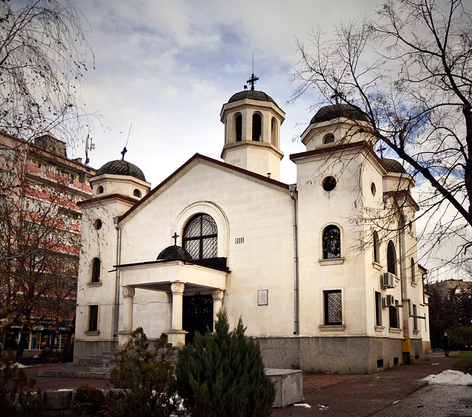

Пловдив
Древен и вечен
География
История
Храмове
Старият град Пловдив
Забележителности
Интересни факти
Развлечения
Храмове
"Свети Константин и Елена" - Разположена е в Стария град, на прехода между Джамбаз тепе и Небет тепе, точно до източната порта на античния акропол. Построена е през 1832 г. на мястото на старата църква от майстор Петко Боз.
Храм „Света Неделя“ е православна църква, носеща името на света великомъченица Неделя (Кириакия). Намира се в Стария град под източната стена на градската крепост, в непосредствена близост до източната градска порта Хисар капия. Църквата е известна като паметник на борбите за национална църква в Пловдив.
Храм "Света Петка Стара" или "Света Параскева" е
православна църква, посветена на света преподобна
мъченица Параскева.
Намира се в Стария град (Трихълмието), в
непосредствена близост до Понеделник пазар.
Храм "Свети Георги Победоносец" се намира в квартал "Мараша", на ул. "Янко Сакъзов" № 5 до Четвъртък пазар. Църквата съществува в днешния си вид от 1883 г. и е построена върху съществуваща по-стара църква по проект на архитект Йосиф Шнитер.
Храм "Свети Иван Рилски" е построена
през 1931 г. и се намира в кв. "Каршияка", ул. "Свети
Иван Рилски" и ул. "Васил Левски" №85.
Йоана Иванова, Ивайла Гаджакова, Ивайла
Невенова
2024
2024